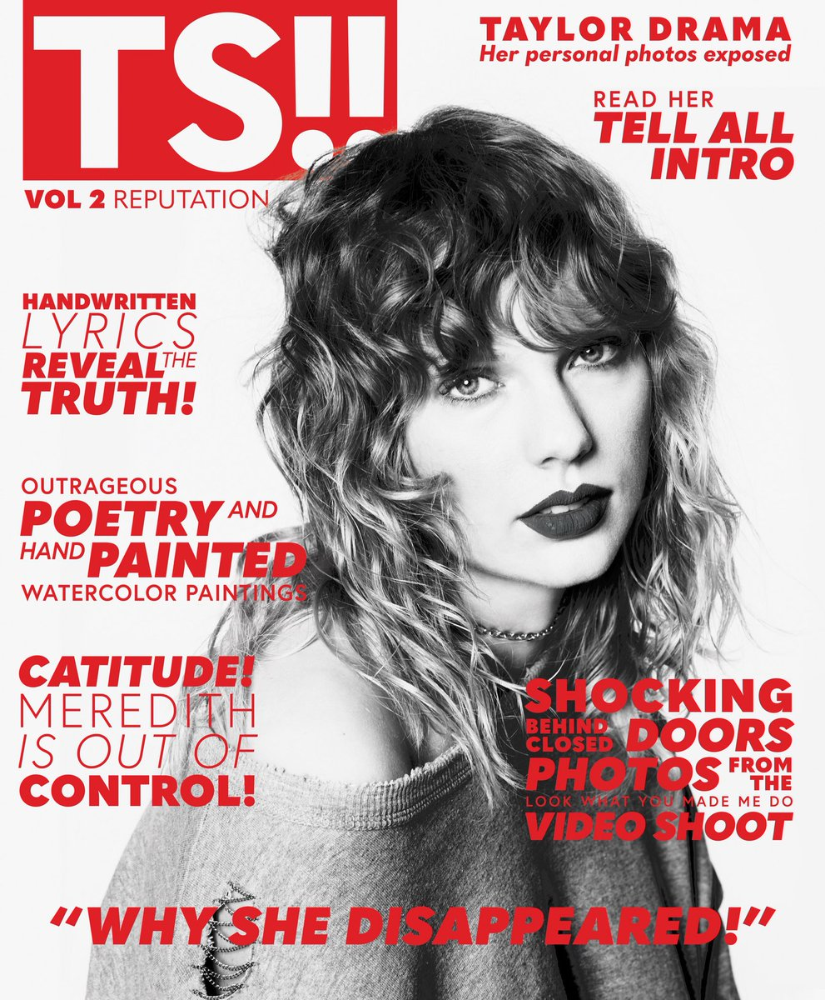

Astronomers have discovered a so-called "zombie" star -- the first star to explode multiple times http://cnn.it/2hm6hsP pic.twitter.com/GBybrqCuP4
Twitter.com makes heavy use of browser cookies
Please enable cookies in your browser preferences before signing in.
Moments · View all

Link's new costume looks familiar 
Gaming
1 hour ago
To commemorate the release of Xenoblade Chronicles 2 on the Nintendo Switch in December, Legend of Zelda hero Link has a new quest. Beating it rewards the Hero of Time with an outfit to use in Breath of the Wild.

Portia de Rossi says she was sexually harassed by Steven Seagal
Personal account
4 hours ago
The actor alleges that the incident took place during an audition for one of Seagal's movies.

Sony plans reshoots as Kevin Spacey is dropped from All The Money In The World
Movies
5 hours ago
Director Ridley Scott is reshooting Spacey's scenes with Christopher Plummer now playing J. Paul Getty. The film is still set for release in December.
Featured Tweets
Here’s a puppo who forgot he cloned himself. Quite the surpuprise. 13/10 for both (IG: bosunthefrenchie)pic.twitter.com/EX1kNZ2VRU
Top former intelligence leaders are dismayed over CIA Director Mike Pompeo's meeting with a conspiracy theorist http://cnn.it/2yIXqZE pic.twitter.com/MGRmJzh7UT
LiAngelo Ball, UCLA teammates could face between 3-10 years of jail time in China if convicted of shoplifting, per @DanWetzel http://ble.ac/2jbhzAh pic.twitter.com/xYeU0VaAd1
"Ohhhhhhhhhhhhhhhhhhhhhh! Let's name the zones, the zones?! THE ZONES! Let's name zones of the open seaaaaaaaaaa! Theeeeeeeeeere's eipelagic, mesopelagic, bathyal, and abyssalpelagic, hadipelagic, and all the rest are too deep for you and me to seeeeeeeeeee!!!!!!!" #280characterspic.twitter.com/fnu1uI80ac
I'm a believer, and I believe in prayer, and at this moment of such heartbreak and loss in the #SutherlandSprings community, what most Americans are most able to do is to pray for those families.pic.twitter.com/7yXU6yOPVz
An episode composed of a single take puts us inside Elliot and Angela’s paranoid minds as the Dark Army executes Stage 2—our #MrRobot recap: http://share.ew.com/bNLD4u0 pic.twitter.com/PY0w6SYXeG
280 characters means we can now go... AGUEROOOOOOOOOOOOOOOOOOOOOOOOOOOOOOOOOOOOOOOOOOOOOOOOOOOOOOOOOOOOOOOOOOOOOOOOOOOOOOOOOOOOOOOOOOOOOOOOOOOOOOOOOOOOOOOOOOOOOOOOOOOOOOOOOOOOOOOOOOOOOOOOOOOOOOOOOOOOOOOOOOOOOOOOOOOOOOOOOOOOOOOOOOOOOOOOOOOOOOOOOOOOOOOOOOOOOOOpic.twitter.com/pEZyuK5tg2
Top Trump Pentagon nominee: It's 'insane' that civilians can buy semiautomatic assault rifles. http://abcn.ws/2zFYnSD pic.twitter.com/wjzH47SGGg
BTS has been confirmed to perform on #TheEllenShow for their daytime TV debut http://blbrd.cm/xrrJ2l pic.twitter.com/I92SdGzeHb

I am SO happy to be supporting @BBCCiN with these one of a kind #TOMMYxGIGI ears, which form part of a beautiful collection curated by @kegrand. Bidding starts at 9am GMT via http://bbc.co.uk/pudsey , DO IT FOR THE KIDS!!! 
#CiNpic.twitter.com/A45VqXn9aT
Descend on Mok Myeok, a staggering communications and observation tower in Seoul, South Korea. http://ubi.li/jd95v pic.twitter.com/ZZ3TzCYdPL
In 2,500 shows, sometimes things don’t go as planned. And here’s what that looks like. #Ellen2500pic.twitter.com/e8qKV289kS
"So if your internet is bad, how do you still upload daily videos?"
Me:  pic.twitter.com/bLfkqtNdit
pic.twitter.com/bLfkqtNdit

Forgot to show the back of the Target magazines  on Friday you can get your hands on this quality reading material. http://taylor.lk/target pic.twitter.com/w8q9R752vR
on Friday you can get your hands on this quality reading material. http://taylor.lk/target pic.twitter.com/w8q9R752vR
Soldier carrying his service dog down a mountain because it was 117 degrees and the rocks were burning his paws. He deserves endless likes.pic.twitter.com/la6FOaYGMi
The Women's March inspired them to run. now they're unseating GOP men. http://huffp.st/iKwFBQb pic.twitter.com/EAyuEW6sU4

Dan has hidden my dogvent calendar so I don't eat all the chocolates early If you have more self control than me we still have some left here! https://www.danandphilshop.com/collections/prints/products/dan-and-phil-advent-calendar-2017 …pic.twitter.com/t4iChMpPRr

Josh: nineteen pilots? Tyler: mmm...nah Josh: ....twenty pilots? Tyler: idk, still feels like it’s not there Josh: twenty...one?...pilots? Tyler:pic.twitter.com/NkiQpxHPk2
NFL 360: Let it Shine
Follow @NFL
A friendship that transcends football.
Meet the 7-year-old with inoperable brain tumors who forever changed rookie QB @josh_dobbs1's life.pic.twitter.com/hZL30nhh79

We've lost a brother today. No matter where you are @INTERNETHULK, we will always remember your smile and passion for esports. Thank you for bringing us so much cheer. Rest easy friend.pic.twitter.com/OZgZ9hJzrI
Loading seems to be taking a while.
Twitter may be over capacity or experiencing a momentary hiccup. Try again or visit Twitter Status for more information.